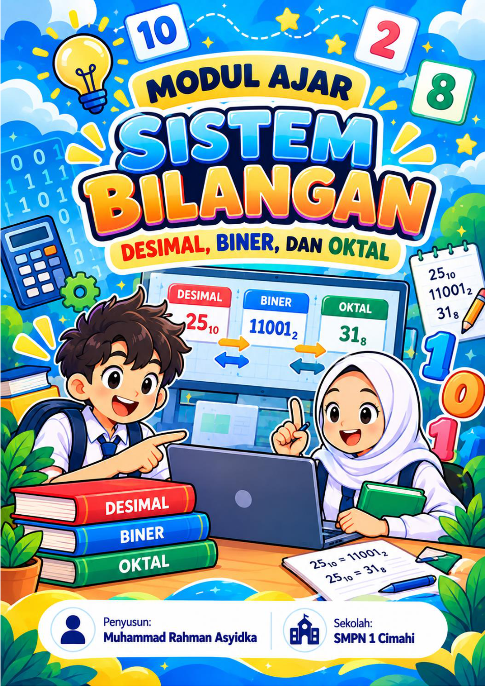
Pertemuan 07
Eksplorasi Sistem Bilangan
Discovery Learning melalui kartu nilai tempat biner dan Binary Pixel Art. Fokus menemukan pola 1, 2, 4, 8, 16 dan mengonversi bilangan.
Buka Modul PDF ↗Perjalanan merancang, melaksanakan, dan merefleksikan pembelajaran Informatika di SMP Negeri 1 Cimahi dengan fokus utama pada sistem bilangan desimal, biner, dan oktal agar terasa seru, visual, dan mudah dipahami oleh peserta didik SMP.
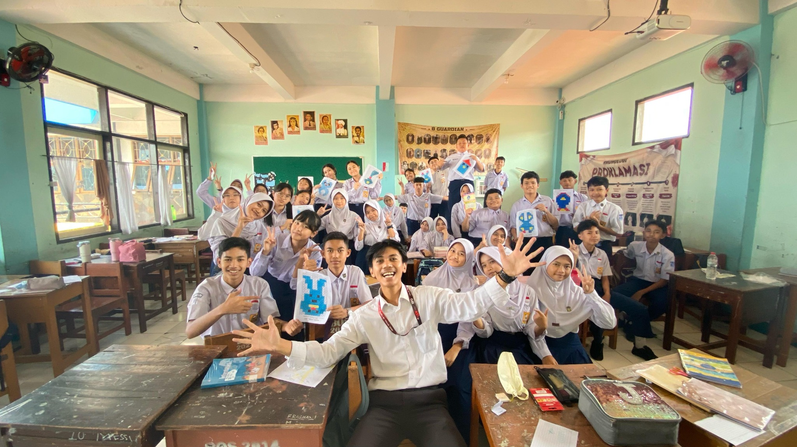
Identitas calon guru, lingkungan kampus LPTK, serta sekolah tempat pengalaman praktik mengajar dibangun.

Calon guru Informatika yang berupaya mengembangkan pembelajaran kontekstual, menarik, dan memberi kesempatan peserta didik menemukan konsep melalui eksplorasi.
Kontak pribadi dapat ditambahkan pada versi publik setelah disetujui.
UPI Bandung menjadi lingkungan pendidikan profesi dalam mengembangkan kompetensi pedagogik, profesional, sosial, dan kepribadian.
Video profil UPI · Sumber: YouTube
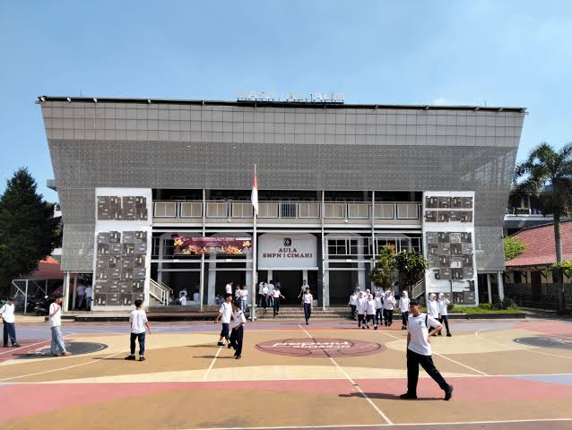
Sekolah tempat pelaksanaan praktik mengajar mandiri. Melalui pembelajaran Informatika kelas VIII, pengalaman di sekolah menjadi ruang untuk menerapkan perencanaan pembelajaran, asesmen, dan refleksi profesional.
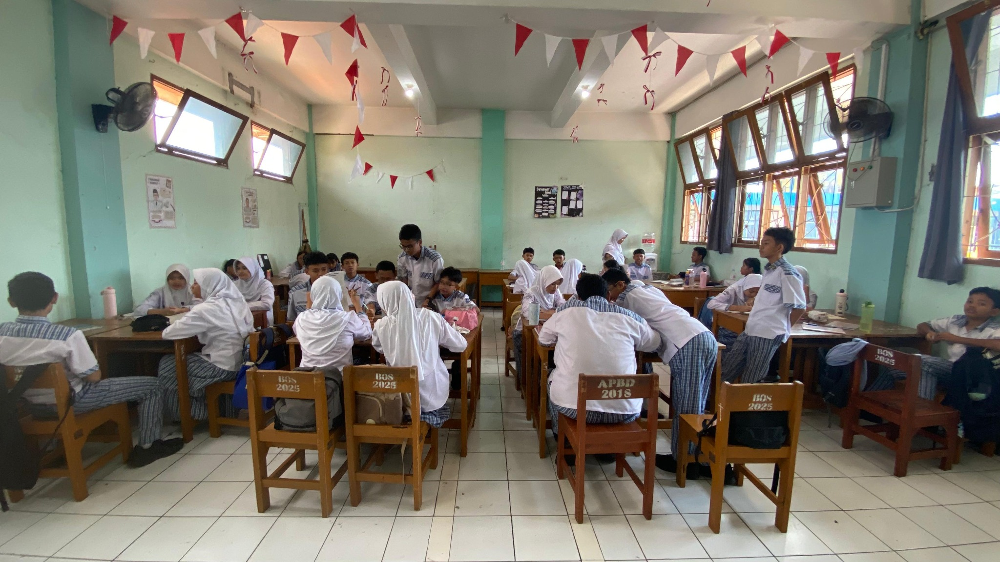
Tiga modul ajar sistem bilangan disusun bertahap: mulai dari pengenalan desimal–biner, penguatan konversi, hingga hubungan biner dan oktal. Semuanya ditampilkan dengan cover visual yang ceria dan mudah dipahami.

Discovery Learning melalui kartu nilai tempat biner dan Binary Pixel Art. Fokus menemukan pola 1, 2, 4, 8, 16 dan mengonversi bilangan.
Buka Modul PDF ↗
Penguatan konsep desimal dan biner, konversi dua arah, serta penerapan dalam LKPD dan Binary Pixel Art.
Buka Modul PDF ↗
Penemuan hubungan tiga bit dan satu digit oktal melalui kartu 4–2–1, konversi dua arah, serta tantangan Code Clash.
Buka Modul PDF ↗Penomoran pertemuan mengikuti dokumen asli. Pemetaan formal ke siklus 2–4 dapat disesuaikan bila diperlukan.
Mengidentifikasi tujuan, manfaat media, kekuatan rancangan, serta area yang perlu diperhatikan berdasarkan isi setiap modul ajar.
Kekuatan: kartu biner mendekatkan konsep nilai tempat yang abstrak ke aktivitas konkret. Binary Pixel Art membantu menerapkan konversi dalam karya visual.
Tantangan: memastikan pemerataan giliran dan memantau pemahaman tiap anggota kelompok.
Kekuatan: latihan konversi dua arah dan media visual memperkuat keterhubungan desimal–biner.
Catatan: identitas modul menyebut Discovery Learning, sedangkan bagian kegiatan inti menyebut Problem Based Learning; konsistensi model perlu ditinjau.
Kekuatan: relasi 8 = 2³ diperkenalkan lewat kombinasi kartu 4–2–1; Code Clash menjadi sarana pengujian dan koreksi jawaban.
Tantangan: kesiapan perangkat dan koneksi, sehingga alternatif kartu tantangan perlu tersedia.
Media dan karya dari pembelajaran sistem bilangan ditampilkan secara visual untuk menghubungkan konsep, proses belajar, dan produk akhir.
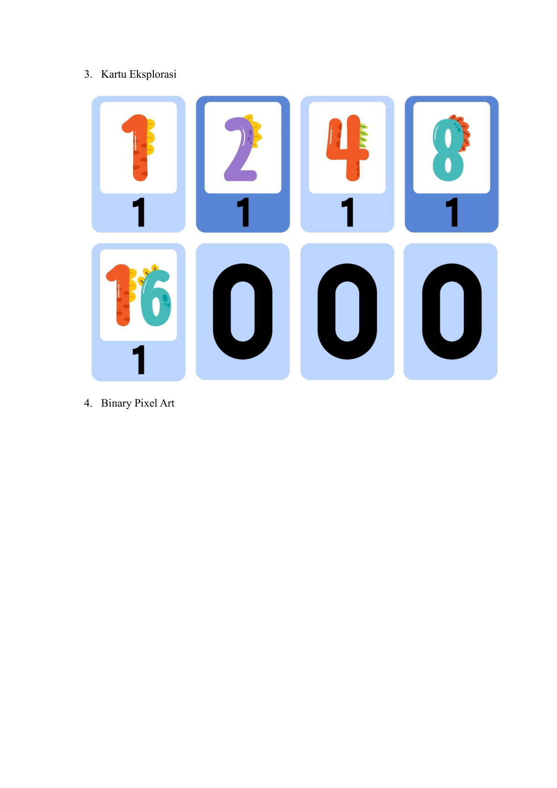
Media 0/1 dan nilai tempat untuk mengeksplorasi kombinasi bilangan secara konkret.
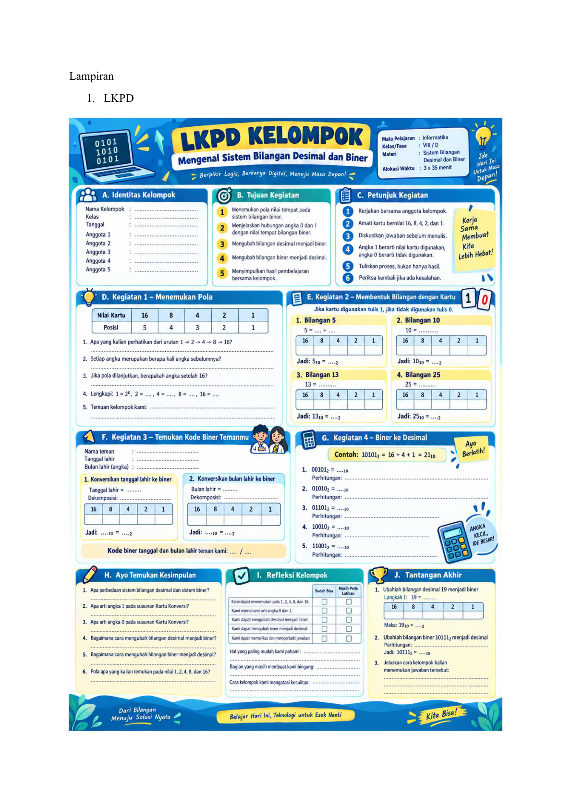
Panduan aktivitas menemukan pola, menyusun kombinasi, dan memeriksa hasil.
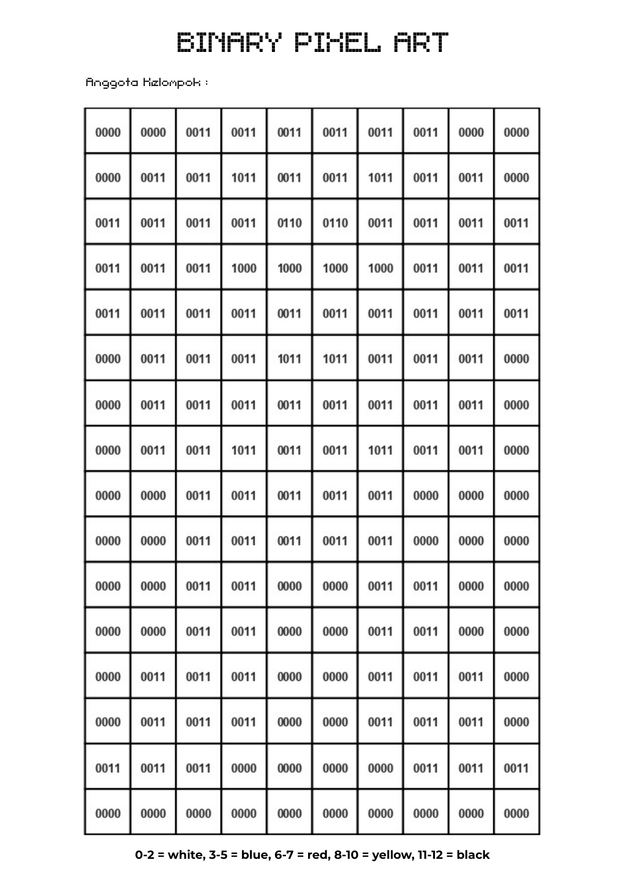
Representasi kode biner menjadi pilihan warna dan visual yang terbentuk dari piksel.
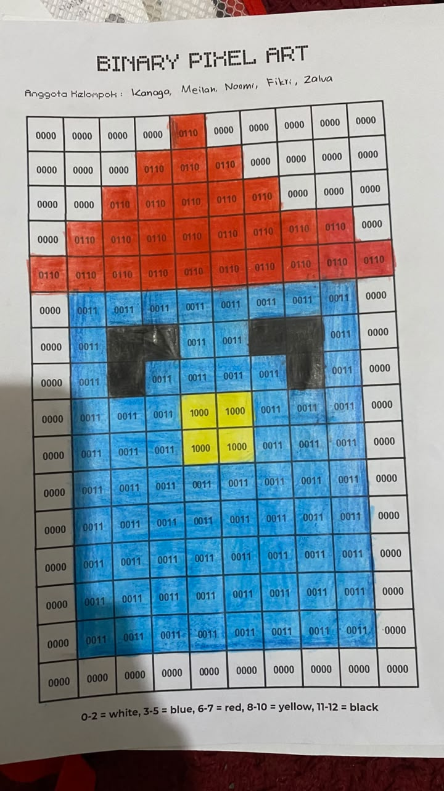
Karya siswa 01 · Aplikasi konversi dan warna
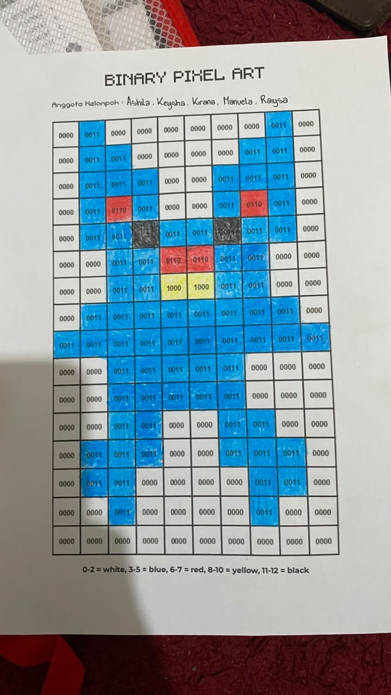
Karya siswa 02 · Ketelitian pada pola piksel
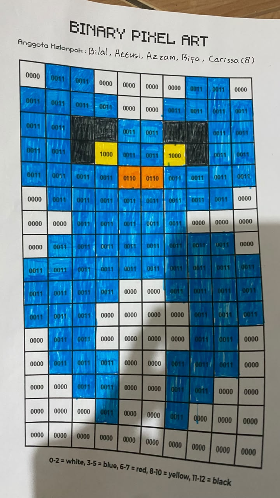
Karya siswa 03 · Produk visual hasil konversi
Tiga ruang video disediakan. Video pertama sudah dapat ditonton langsung, sedangkan video kedua dan ketiga akan ditambahkan setelah tautannya tersedia.
Dokumentasi pembelajaran Sistem Bilangan · Pertemuan 7
Ruang dokumentasi pelaksanaan pembelajaran berikutnya.
Ruang dokumentasi pelaksanaan pembelajaran berikutnya.
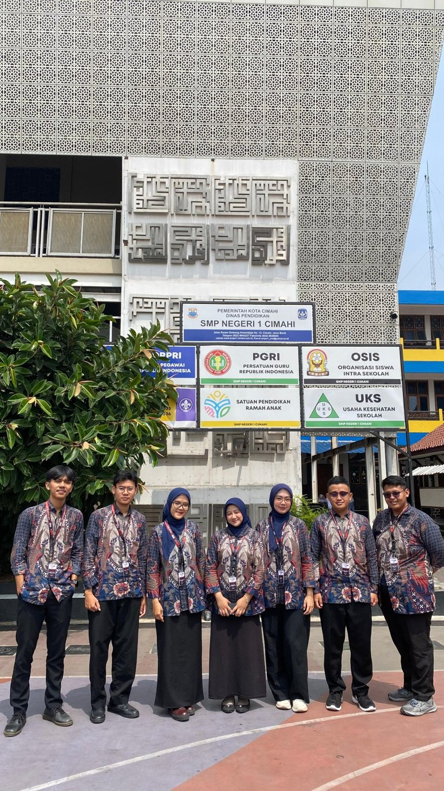
Refleksi awal berdasarkan perencanaan tiga pertemuan, yang dapat diperdalam setelah dokumentasi video dan hasil asesmen lengkap.
Saya ingin menjadi guru Informatika yang membantu peserta didik memahami konsep rumit dengan pendekatan sederhana, konkret, dan menyenangkan. Pembelajaran perlu memberi ruang untuk mencoba, menemukan pola, berdiskusi, dan memperbaiki kesalahan.
Menyusun giliran dan peran yang lebih jelas selama eksplorasi kartu atau media digital.
Menggunakan bukti proses dan latihan singkat untuk memastikan pemahaman tidak hanya terlihat dari produk kelompok.
Mengkaji interaksi, pengelolaan waktu, dan pendampingan berdasarkan rekaman pelaksanaan yang tersedia.